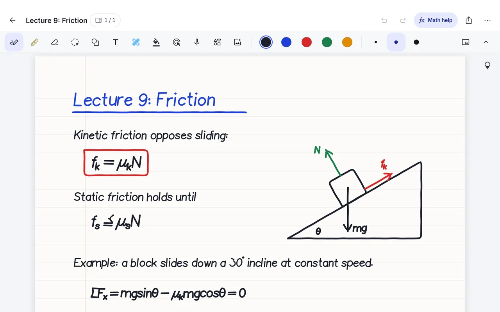
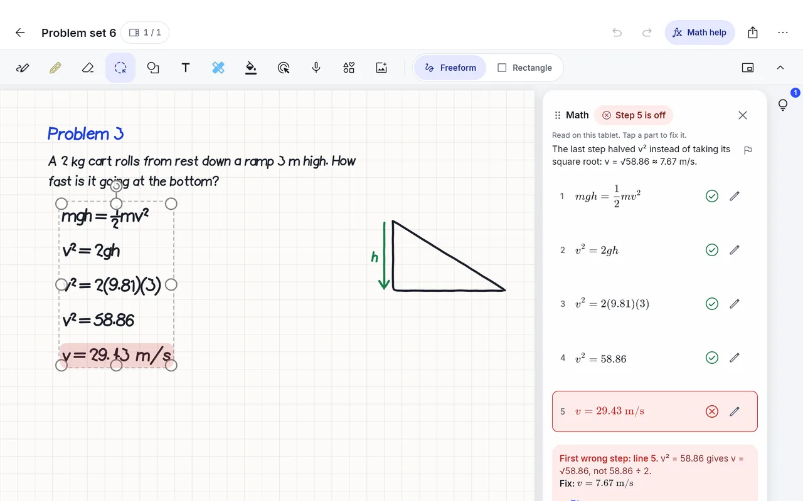
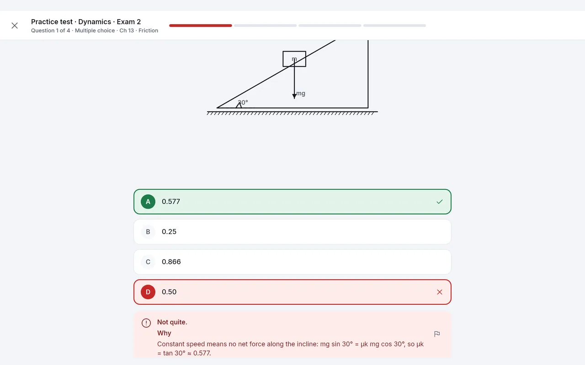
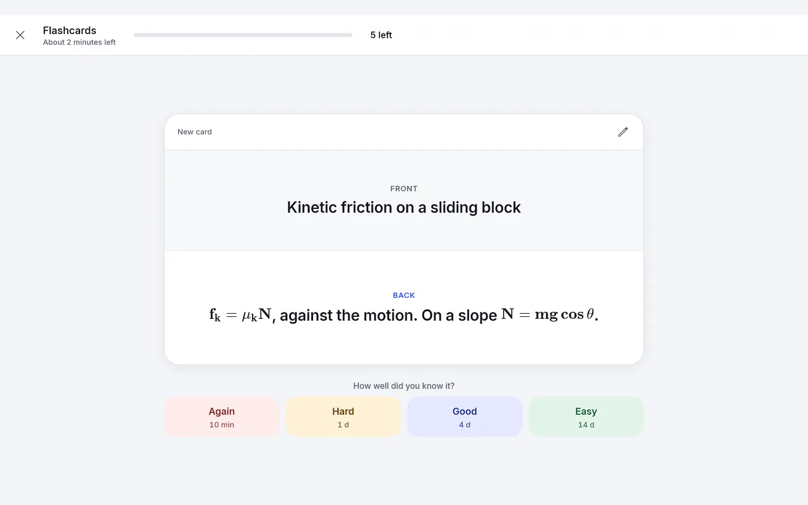
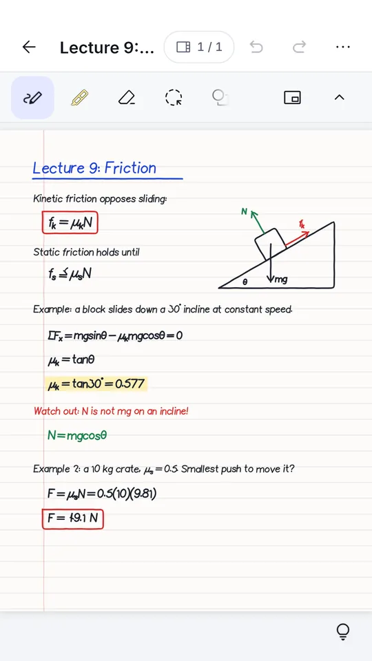
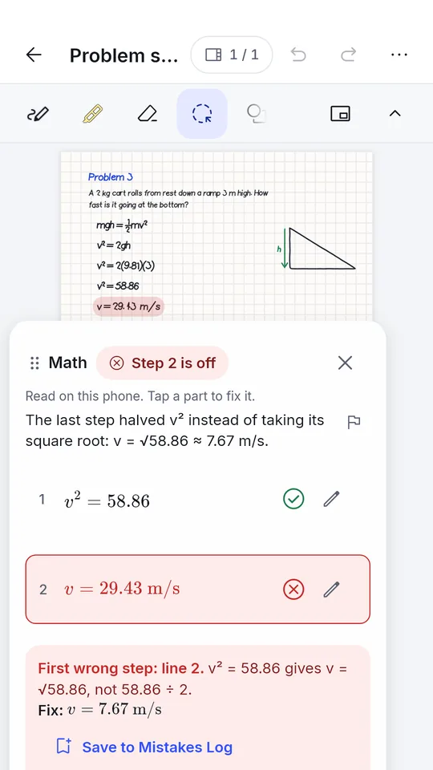

What Scratchwork does
This is the list of what is built and working in the beta today. Anything planned is marked as planned. Screenshots use demo notes.
Notes you write with a pen
- Notebooks and folders made for a stylus: pens, highlighters, shapes, an eraser, a lasso and text boxes.
- Import PDFs, Word, PowerPoint and Samsung Notes files, or photos, then write on them. From Goodnotes, Notability or OneNote, export a PDF there and import it.
- Record a lecture inside a notebook and play it back later.
- Search finds your handwriting and your math, in any spelling.
- Lasso, then Text reads your handwriting on the device, with no AI. If it misreads, one tap reads it with AI.
- Lock a notebook with your fingerprint, face or PIN.
- Sepia and high-contrast pages, and a left-handed layout.
- Export a notebook as PDF, text or LaTeX, or save all your data in one .zip file.

Math checking
- The Math card reads each line you circled, checks it against the one before, and marks the first wrong step with the fix. Tap a part that was read wrong to correct it.
- Math help checks as you write. End a line with = for an answer, and a tutor flags a step that does not add up, with a hint on request.
- Steps the app can decide on your device are checked there, without AI. The card says "Checked on the device".
- Code cells on the page do units, solve, integrals, matrices and plots.
- Work a test question on paper and the app grades your page. It looks at a free-body diagram too.
- Save a wrong step to the Mistakes Log, then make a flashcard or get practice problems from it.
On Windows, handwriting is read by AI, which needs an account. On an Android tablet or phone it is read on the device. The AI can be wrong, and AI answers have a Report this answer button.

Practice tests
- Open a class folder, tap Study, and pick a practice test. It is built from your notes and the class material you connected, and solved the way your course teaches.
- Multiple choice, short answer and worked problems, at the level you pick. Timed if you want.
- Answer keys are checked before you see them. A question whose key does not check out is dropped, and the test says so.
- Figures from your class pages show up with the question. A test's formula sheet never gives away an answer.
- After a test you see what you missed and why. Missed questions go to the Mistakes Log by themselves, and you can retry them.
- An exam planner spreads short daily sessions between today and the exam, weakest topics first.

Lessons, flashcards and formula sheets
- A lesson teaches a topic from your notes one step at a time: the idea, key equations, a worked example, then a check question. A wrong answer gets that part taught again.
- Lessons end with a test of their own, and a right number without its unit still counts, with a reminder to add the unit.
- Listen to a lesson, a lecture summary or a recap read aloud.
- Flashcards come from your notes and from your mistakes, with Again, Hard, Good and Easy spacing.
- A formula sheet for a class is made from what its practice tests would use, as small typeset note cards you can move and edit.

Your classes
- Connect Blackboard, WebAssign or WeBWorK to see due dates, announcements, files and homework next to your notes.
- You sign in on your school's own page. Scratchwork never stores your school password, and it only reads. It never submits, saves or starts anything.
- Due-date reminders, if you turn them on, and a map of related pages across your notebooks.
- I built and tested this against one university's setup first. Another school's sign-in may behave differently, so tell me if it does.
Phone, tablet and Windows
- Android tablets and phones, and Windows PCs. iOS is planned, not built yet.
- You need an account during the beta, and an account needs an invite code.
- With an account, notebooks sync between your devices. AI features need an account and have daily limits.
- Delete your account from Settings or from this site. That removes everything synced to it.

